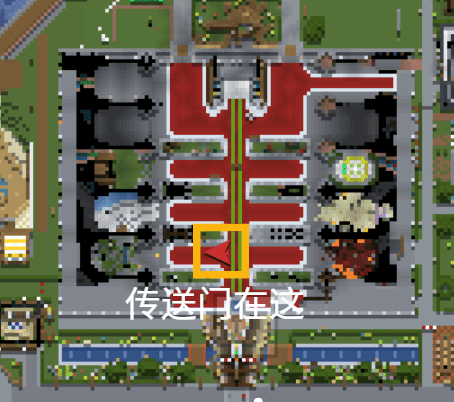
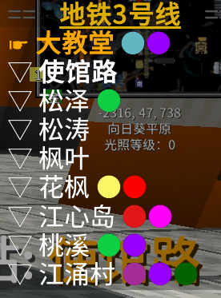

桃花源新人指南
地理位置
桃花源是中式古风小镇，也是牛腩第一个五星小镇，成立于2020年5月，位于牛腩镇以西的大平原。前往桃花源有两种方式：一是从牛腩大教堂出生点沿着中轴线往南走，穿过门口右侧的传送门即可到达地铁桃花源站附近。二是从大教堂站乘坐地铁3号线（江涌村方向）坐到江心岛站。
{kind=link}

{kind=link}

建议初次游览桃花源的新人优先前往桃花源站、桃溪站和江心岛站进行观光，地标桃花树、荷花湖、万穗山等优质景点都集中于此。桃花源江涌村设有系统商店分店和官方村交所，镇成员购买物品、兑换建材无需前往主城，便利居民购物。
城镇理念
{kind=link}
桃花源法典
三、制度建设
桃花源在《牛腩法典》的基础上编纂了《桃花源法典》作为镇规，它主要规范了损坏物品的赔偿标准、红石机器改造、住房搬迁等常见矛盾，随着玩家遇到的纠纷种类越来越多，《桃花源法典》也会不断更新法条。不过新人不必担心会有过多的繁文缛节，我们绝不制造徒有其名的“僵尸条款”，法典中的每一项规则，都源自小镇自建镇以来沉淀的真实运营经验，没有一条是为了充数而凭空增设的空泛约束。
在实际游玩中你几乎感知不到这些规则的存在，绝大多数日常游玩场景——正常建造房屋、开采资源、使用公共设施等，很难触及镇规的边界。很多扎根小镇数月的老镇民，也未必完整通读法典全文，它更像一份藏在身后的兜底依据，只有在出现无法调节的矛盾时才会被拿出来作为公允的评判标尺。事实上，自桃花源成文法典施行至今，正式生效的裁决仅有两例。以下为《桃花源法典》原文：
- 内容版本
- 2026.07
- 页面整理
- 法典范围
- 六编二十七条
- 坐标状态
- 按本次资料录入
页面整理日期不等同于法典生效或坐标核验日期。
第一编总则
第二编责任与义务
- 第八条镇成员因过错损害他人利益或公共利益，应当承担相应责任。
- 第九条因过错毁损他人财产或公共财产，一般只要求赔偿损失部分。对态度恶劣的可以适用至少2万N币的惩罚性赔偿。态度极其恶劣的开除镇籍。
- 第十条被开除镇籍者，原则上所有在镇内的财产充公，法院可以结合本人的认错态度酌情返还财产。
- 第十一条无合理理由（比如忙于工作学业无法上线）逾期不缴纳赔偿款或者罚款者，开除镇籍。
- 第十二条实施人身攻击、霸凌他人、玩政治游戏、盗窃等严重有损桃花源声誉且引人不适的行为，直接开除镇籍，事后认错态度良好的可以酌情减轻处罚。
- 第十三条桃花源成员有使用仓库的权利和补给仓库的义务，故意挥霍仓库财物的，应赔偿仓库全部损失且向金库缴纳2万至5万N币的罚款。
- 第十四条桃花源成员有金库取钱的权利和补给金库的义务，取钱必须在支票箱旁的账本写明金额和用途，隐瞒不报或者私自修改账本的以盗窃论。
- 第十五条桃花源原则上不承认双重镇籍，未经镇长同意，严禁将仓库资源用于资助其他城镇或者聚落，违者开除镇籍。
第三编桃花源组织架构
第四编选举制度
-
第十八条
桃花源镇采用有条件选举，镇成员必须满足法定条件才具有选举权和被选举权，法定条件如下：
- 最近一个月内在桃花源镇内留有coi痕迹
- 最近一个月内在桃花源QQ群内发过言
- 第十九条当镇长或管理员无法继续履职时，任何有选举权的成员可以提案启动选举程序，由提案人指定一名候选人并且召集全体有选举权的成员表决，提案人和候选人可以为同一人，获得三分之二以上同意票即可当选下任镇长或者管理员。
-
第二十条
当镇长或管理员出现以下任一情形时，视为无法继续履行职务，职位进入空缺状态：
- 账号被ban
- 本人书面声明退服或者辞职
- 失联三个月
-
第二十一条
候选人未获得三分之二以上同意票，可选择以下任一方式处理：
- 一周后重新组织选举
- 由牛腩管理组指定临时城镇负责人，任期至下次正式选举产生负责人为止
第五编领地与自治
-
第二十二条
桃花源成员在连贯土地修建较多数量风格统一的高质量建筑，可申请领地，领地具有排除其他人在此地修建建筑、红石机器的效果。但领主表现出违反《牛腩城镇法》第十四条规定情形的，撤销领地。
注：《牛腩城镇法》第十四条：
- 镇长或大部分成员长期不活跃
- 与其他城镇产生矛盾而影响服务器氛围
- 与其他城镇进行恶性竞争，垄断资源
- 出现排外封闭、抱团孤立等不友善的行为
- 恶意占地，肆意破坏环境而不进行建设
- 镇长或成员违反法典或发表不当的言论
- 其他对服务器有害的行为
- 第二十三条在距离桃花源本土较远的无主地建设聚落的小镇成员，可申请自治，视为聚落，自治可自主命名、独立决策、独立招新、独立外交。但聚落长领主表现出违反《牛腩城镇法》第十四条规定情形的，撤销自治。
第六编物权
附：
桃花源重要设施位置
| 序号 | 主要设施 | 位置 |
|---|---|---|
| 1 | 桃花源系统商店与官方村交所 | -3186，1028 |
| 2 | 江涌村仓库 | -3218，992 |
| 3 | 江心岛仓库 | -3125，1322 |
| 4 | 桃溪潼关路仓库 | -3367，1261 |
| 5 | 金库（角楼） | -2982，1505 |
| 6 | 桃花源储蓄银行 | -3141，1368 |
| 7 | 石匠屋 | -3049，969 |
| 8 | 工具匠屋 | -3219，973 |
| 9 | 盔甲与武器匠（精修精准耐久时运抢夺效率） | -3182，946 |
| 10 | 桃花源工业区 | -3901，809 |
| 11 | 守卫者农场 | -4573，1220 |
桃花源景点位置
| 序号 | 景点名称 | 位置 |
|---|---|---|
| 1 | 桃花树 | -3049，1265 |
| 2 | 鼓楼 | -3301，1273 |
| 3 | 红桥 | -3077，1251 |
| 4 | 独乐寺（桃花源法院） | -2975，1349 |
| 5 | 角楼观赏点 | -3072，1393 |
| 6 | 万穗山 | -2923，1303 |